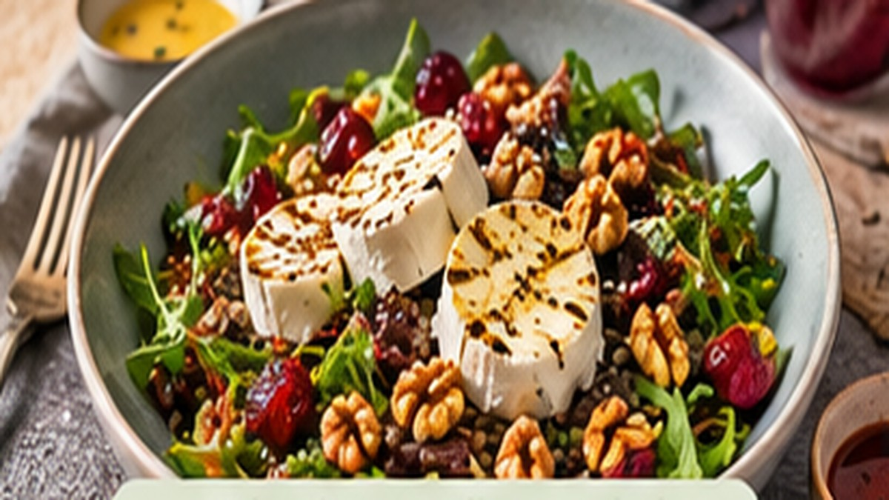

🧀 Geitenkaas op linzensalade met cranberrydressing
Met gezouten amandelen, zoetzure ui en geroosterde zoete aardappel

635 kcal⏱️ 25 minGemakkelijkCaloriebewustVeggie
Ingrediënten
1 pak linzen (voorgekookt)
300 g zoete aardappel
1 paarse wortel
1 rode ui
1 zakje gedroogde tijm
1 mini-komkommer
60 g rucola en veldsla
40 g cranberrychutney
30 g gezouten amandelen
50 g verse geitenkaas
1 el olijfolie
1 el extra vierge olijfolie
2 el witte balsamicoazijn
1 tl suiker
1 tl mosterd
Peper en zout
Bereidingswijze
Verwarm de oven voor op 220 °C. Snijd de zoete aardappel en de wortel in blokjes van ongeveer 1 cm. Snijd de helft van de rode ui in partjes.
Leg zoete aardappel, wortel en uipartjes op een bakplaat met bakpapier, besprenkel met olijfolie, strooi de tijm erover en breng op smaak met peper en zout. Rooster 20–25 minuten tot alles goudbruin is.
Snijd de rest van de ui in dunne ringen. Meng de suiker met de helft van de witte balsamico en laat de ui hierin marineren: zo krijg je zoetzure ui.
Maak de dressing: roer de cranberrychutney los met de extra vierge olijfolie, de mosterd en de rest van de balsamico. Breng op smaak.
Spoel en laat de linzen uitlekken. Snijd de komkommer in blokjes en hak de amandelen grof.
Meng linzen, komkommer, rucola en veldsla met de dressing. Schep de geroosterde groenten erdoor, verdeel over de borden en werk af met verkruimelde geitenkaas, de zoetzure ui en de amandelen.
Voedingswaarden (per portie):
Calorieën: 635 kcal Eiwitten: 18.3 g
Bron: HelloFresh (caloriebewuste recepten). Hoeveelheden omgerekend naar 2 personen, bereiding in eigen woorden. Voedingswaarden gelden per portie.